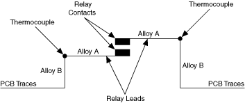
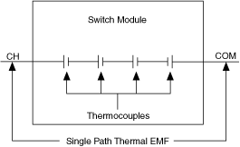
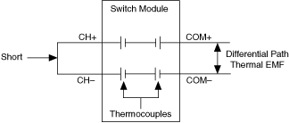

当两种不同的金属连接在一起时，就会产生电压。该电压称为热电动势 (EMF) 或塞贝克电压。塞贝克电压取决于结的温度和连接金属的成分。特定的金属对金属结会产生特定的温度系数 (µV/°C)，也称为塞贝克系数。下表列出了最常见的金属及其各自的塞贝克系数。
| 结 | µV/°C |
|---|---|
| 铜铜 | <0.3 |
| 铜金 | 0.5 |
| 铜银 | 0.5 |
| 铜黄铜 | 3 |
| 铜镍 | 10 |
| 铜铅锡焊料 | 1-3 |
| 铜铝 | 5 |
| 可伐铜 | 40 |
| 铜-氧化铜 | >500 |
机电继电器的引线通常由金属合金组成，最常见的是镍铁合金，而开关模块的 PCB 通常由铜或铜合金组成。这两种不同金属之间的连接会形成一个热电偶，如下图所示。

|
注意 继电器中产生的热电偶取决于结的温度。结的温度根据环境温度、激活的继电器数量、开关模块内的气流以及位于相邻插槽中的开关模块的类型而变化。 |
信号路径可以横穿单个继电器或多个继电器。信号路径中所有热电偶的总和表示为热 EMF。热 EMF 可以指定为单路径（单线）或差分路径热 EMF。下图说明了在单个路径中测量的热 EMF。

下图说明了在差分路径中测量的热 EMF。

使用开关和数字万用表测量电压时，请务必在整个系统精度计算中考虑热电动势。
例如，如果 DMM 的精度为 4 µV，而开关的差分路径热 EMF 为 3 µV，则整体系统精度可计算如下：
√(4² + 3²) = 5 µV
因此，在测量 50 mV 信号时，整体系统精度为 0.01%。
|
注意 有关热 EMF 和热电偶测量的信息，请参阅热电偶测量。 |
 提交有关此主题的反馈。
提交有关此主题的反馈。 访问ni.com/support以获得技术支持。
访问ni.com/support以获得技术支持。